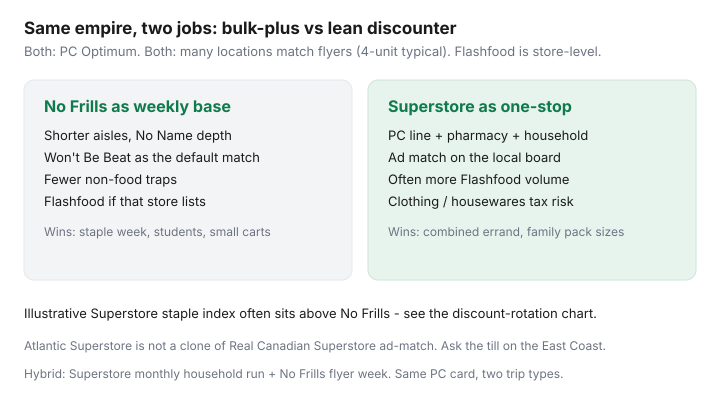

Food & Groceries · Canada
No Frills vs FreshCo vs Food Basics vs Walmart: build a Canadian discount rotation

Convenience shopping at full-service banners quietly adds a double-digit premium versus discounters on identical staples. Canadian personal-finance threads often put that gap around 10–15% or more. That is a community pattern, not a Statistics Canada banner index — so treat it as a hypothesis you prove with a 12-item list, not as a law.
This guide builds a discount rotation across Canada’s three grocery empires’ cheap banners, plus Walmart, with loyalty overlays. It is not U.S. Aldi/Lidl advice. Maxi, Super C, and Save-On-Foods matter as soon as you leave Ontario’s No Frills/FreshCo/Food Basics triangle.
Key takeaways
- “Cheapest store” is either a full-basket average or a cherry-pick. Decide which game you are playing.
- On the 12–18 Nov 2026 Toronto flyers, Walmart had the lowest price on 6 of 10 staples, but no store was cheapest on the whole basket, and Walmart is the one that won’t match a rival’s flyer.
- Pair No Frills with PC Optimum, FreshCo with Scene+, Food Basics with Moi offers, Walmart with a card that actually codes there (not Amex).
- Produce and meat quality are store-level, not banner theology. Walk away from a bad case.
- One weekly discounter plus a monthly bulk run beats three Saturday parking lots for most families.
- Keep Loblaws/Sobeys/Metro for exceptions, not milk.
What did the same 10 staples cost at each store this week?
On the flyers valid 12–18 November 2026 for Toronto (postal code M4C 1A1), Walmart had the lowest price on 6 of 10 staples, No Frills and Food Basics won one each, and FreshCo won none outright. No store listed all 10, so no single flyer was the cheapest basket.
| Staple | No Frills | FreshCo | Food Basics | Walmart |
|---|---|---|---|---|
| Butter, 454 g | $5.99 (Lactantia) | — | $8.49 (Selection, 4 × 113 g) | $4.97 (Gay Lea) |
| Sliced bread loaf | $2.50 (Wonder 675 g, $0.37/100 g) | $2.49 (Compliments 600 g, $0.42/100 g) | $2.69 (Dempster’s 675 g, $0.40/100 g) | $2.88 (Dempster’s grain, size not listed) |
| Chicken breast, boneless skinless | $5.99/lb | $6 (9-pack fillets, unit not listed) | $4.98/lb | — |
| Medium ground beef | — | — | $6.99/lb | $6.34/lb |
| Tomatoes (vine, cluster or hothouse) | $2.49/lb | $1.99/lb | $1.99/lb | $1.92/lb |
| Carrots, bagged | $2.99 / 3 lb | $2.99 / 3 lb | $1.99 / 2 lb | — |
| Potatoes, 10 lb | $3.99 | — | — | $3.94 (4.54 kg) |
| Classico pasta sauce, 410–600 mL | $2.97 | — | $2.97 | $3.47 |
| Yoplait Skyr, 750 g | — | $5.99 | $5.99 | $5.48 |
| Yoplait Yop, 200 mL | $1.00 | $1.00 | $0.99 | $0.88 |
Five staples all three of No Frills, Food Basics and Walmart listed (butter, each store’s own loaf, 1 lb of tomatoes, a jar of Classico, one Yop): Walmart $14.12, No Frills $14.95, Food Basics $17.13. Taking the lowest flyer price for each comes to $13.24, so the Food Basics flyer was $3.89 (about 29%) higher on the same five. Most of that gap is butter: $8.49 for four Selection sticks versus $4.97 for a pound of Gay Lea at Walmart. Loaf sizes differ (Walmart’s size isn’t listed).
Prices are flyer listings for one postal code and one week; your store, region and next week will differ. For context, Statistics Canada’s September 2026 CPI release says grocery prices are up 33.0% since September 2020, even though grocery inflation slowed to 1.7% year over year.
Which of these stores will price match?
No Frills and FreshCo will match a rival’s current flyer on identical items; Walmart Canada and Food Basics don’t. That is why the store with the weakest flyer can still be the cheapest checkout.
- No Frills (price match): show a major supermarket competitor’s complete current ad (digital or print, with valid dates) for an identical or comparable item the store carries, and it matches that price. Identical means same brand, item type (for produce, meat and bakery), size and attributes. Up to 4 per item. Excludes “Spend X Get X”, “Free”, email/online-only offers and loyalty offers including PC Optimum Member Pricing. Each store sets its own competitor list.
- FreshCo (Lowest Price Guarantee): sells the identical item for 1¢ less than a discount competitor’s current flyer price. In Ontario the listed competitors are No Frills, Food Basics, Real Canadian Superstore and Walmart. Up to 4 units per item; loyalty discounts, clearance and “spend x get x” are excluded.
- Walmart Canada: ended its Ad Match program on 15 October 2020.
- Food Basics: publishes no competitor price-match policy; use its own flyer and Moi offers.
Example with this week’s prices: Yoplait Skyr 750 g was $5.99 on FreshCo’s flyer and $5.48 at Walmart, so under FreshCo’s guarantee it can ring up at $5.47. At No Frills, where meat matches by item type, Food Basics’ $4.98/lb chicken breast could replace No Frills’ own $5.99/lb if Food Basics is on that store’s competitor list. Check the list at the service desk first.
What “cheapest” means: basket vs cherry-pick
A basket shopper wants the lowest total on a fixed list. Discount banners usually win. A cherry-pick shopper wants loss-leader chicken at store A and cheap oats at store B. Cherry-picking wins only if you count fuel, time, and impulse at the second store.
Price matching (where it exists) is cherry-picking without the second lot. That is why the Flipp system sits next to this rotation.

Banner map by province/city availability
| Banner | Parent | Loyalty | Strongest regions (typical) |
|---|---|---|---|
| No Frills | Loblaw | PC Optimum | Ontario, Prairies, some B.C. / Atlantic |
| Real Canadian Superstore | Loblaw | PC Optimum | West + Ontario; bigger box, mixed prices |
| Maxi | Loblaw | PC Optimum | Quebec discounter |
| FreshCo / Chalo! | Empire (Sobeys) | Scene+ | Ontario + West (not everywhere) |
| Food Basics | Metro | Moi (mostly offers) | Ontario |
| Super C | Metro | Moi (limited) | Quebec |
| Walmart Supercentre | Walmart | No grocery coalition | National; no competitor flyer match (Ad Match ended Oct 2020); no Amex |
| Save-On-Foods | Pattison | More Rewards | B.C., Alberta, and other West |
Atlantic shoppers often live in Sobeys / Foodland / Superstore / Walmart space more than Food Basics. Northern pricing is its own problem; this rotation assumes you have at least one discounter within a reasonable drive.
Loyalty overlays (PC, Scene+, Moi)
Do not pick a banner for a 1% offer. Pick the banner, then load the matching program. Details: PC Optimum vs Scene+ vs Moi. Walmart has no coalition points; your “loyalty” there is unit price plus a Visa/Mastercard that codes the purchase (often not as grocery — test a statement).
Produce and meat quality expectations
Discounters can be excellent on Tuesday and tired on Sunday night. If the berries are dust, skip them.
Frozen vegetables are a quality strategy, not a consolation prize. Meat: buy the sale cut you will freeze; do not assume Walmart chicken is always cheaper per kilogram than No Frills thighs on flyer. Weigh it. Check the unit price tag — Canadian shelves generally show cents per 100 g or 100 ml.
One-store vs two-store rules of thumb
Worked example (estimate): $18 documented gap on a weekly list, 8 km extra, 35 minutes, no parking fee. Borderline.
$40 gap on beef and coffee, same trip — go. $6 gap — stay. If you have kids in the car, double the time cost. A second store also creates a second impulse zone; keep the list in your hand.
Sample city rotations (GTA, Calgary, Montreal)
- GTA: Default No Frills or Food Basics or FreshCo — whichever is closest and not a disaster on produce. Price-match at No Frills/FreshCo when the other flyer wins. Walmart for household paper and some pantry. Monthly Costco if you finish bulk. Avoid a weekly Loblaws “because it is on the way home from work” unless you time-price that habit.
- Calgary: Superstore and Walmart do a lot of heavy lifting; FreshCo and No Frills where they exist; Save-On for specific flyer proteins. More Rewards can matter more than Ontario’s three-way fight. Costco is a Calgary sport — still run eligible-spend math before Executive.
- Montreal: Maxi vs Super C is the discounter duel (PC vs Moi). Walmart as a third. Metro and IGA for exceptions. TGTG bakery bags are a downtown hobby, not a staple system.
Avoiding premium Loblaws / Sobeys / Metro for staples
Full-service stores are good at being convenient. Convenience is a fee.
Pay it when you need the specific SKU, the prepared counter, or the pharmacy. Do not pay it for canned tomatoes. If your only nearby store is a pretty banner, use store brands, unit prices, and flyers harder — then use surplus apps if a discounter is on a commute once a week.
Put the chosen fulfilment store into the Sunday loop and stop re-litigating it every Saturday morning.
Loblaws vs No Frills: same company, different job
Loblaws and No Frills are both Loblaw Companies banners and both use PC Optimum, but they are built for different trips. No Frills is the discount format and runs the Won’t Be Beat price-match program; a full-service Loblaws offers a larger fresh, prepared-food and service counter range. Do not assume the same product has the same shelf price at both. Compare identical items and sizes on the two current flyers, then decide whether the extra service is worth it for that trip. The full-service store guide covers when Loblaws, Sobeys or Metro still make sense.
Real Canadian Superstore vs No Frills
This section was merged from our former guide “Real Canadian Superstore vs No Frills: which Loblaw discounter should be your base?” (last updated 20 Sep 2026). Figures keep their original checked dates.
Assortment and shopability differences
No Frills is built to move a grocery list. Superstore is built to capture the list plus the rest of the errand. That shows up as:
- Private label: No Frills is No Name first, with a thinner PC set. Superstore carries the PC ladder (including Black Label as a treat aisle). If your cart is “interesting PC,” Superstore has it; if your cart is oats and beans, No Frills is enough.
- Non-food: Superstore clothing, housewares, electronics, and seasonal. Convenient. Also how a $90 grocery trip becomes $140. No Frills still sells paper and detergent without a patio-furniture season.
- Shopability: Superstore can be a 20-minute walk from dairy to till. Time is a cost. A small No Frills with a tired produce case is a different cost.
Relative staple-basket indexes in our discount rotation put Superstore above the lean discounters and below full-service Loblaws. Treat that as a hypothesis you prove with 12 SKUs, not a Statistics Canada series.

Price match and PC Optimum parity
PC Optimum does not care which Loblaw grocery banner you scanned. Offers, Shoppers bonus events, and Esso math are the same program — maximize PC Optimum. Superstore does not pay extra base points for being bigger.
Price match is where the banners diverge in branding more than in shape:
| No Frills | Real Canadian Superstore | |
|---|---|---|
| Name | Won’t Be Beat | Ad match / Deals Centre language |
| Typical cap | 4 units | 4 units (public RCSS page) |
| Identical item | Yes; produce/meat pickier | Same brand, size, attributes; unbranded produce/meat/bakery by type |
| Won’t match | Loyalty-only, spend-X, Save it Forward windows, pharmacy, gas | Same family of exclusions, plus third-party counters (post office, gas, dry cleaners) |
| Proof | Print or official digital flyer | Original print or official digital ad, complete dates and size |
Walkthroughs: Won’t Be Beat and the Superstore collection page (realcanadiansuperstore.ca Deals Centre). Atlantic Superstore shoppers: several 2026 roundups say ad match is not a reliable East Coast twin. Ask. Do not quote an Ontario policy at a Halifax till.
PC Financial Mastercard earn at both banners if you pay in full — no-fee vs Insiders math. Amex still has gaps at many Loblaw tills.
Flashfood availability patterns
Loblaw’s 2 March 2026 Flashfood release: shoppers saved $58 million in 2025; the app is in over 900 Loblaw grocery stores including select No Frills, Maxi, Real Canadian Superstore, Atlantic Superstore, Loblaws, Wholesale Club, Zehrs, Your Independent Grocer, Provigo, and Dominion in Newfoundland.
Pattern, not a promise: Superstores often list more meat and produce volume because the box is larger. Some No Frills list little or nothing. Some Superstore fridges are locked or empty at 6 p.m. The app is the inventory. Pickup on the route, freeze same night, ignore PC points on Flashfood (community reports: Flashfood typically does not earn Optimum). Fees and drive math: Flashfood Canada guide.
You cannot price-match a Flashfood clearance price onto a regular tray. Superstore’s ad-match page excludes clearance and loyalty-program offers. Do not try.
When Superstore’s one-stop wins
- You need grocery + pharmacy + a household refill in one parking session, and the documented grocery gap versus No Frills is smaller than a second trip.
- The PC SKU or pack size you actually use is only at Superstore.
- Your No Frills produce is consistently poor and the Superstore case is not.
- Flashfood meat you will freeze is on the way home from Superstore, not from the leaner store.
- You will not wander clothing. If you will, No Frills is cheaper even at a $8 grocery premium.
When No Frills’ leaner model wins
- The list is groceries. You are not buying a toaster.
- You want less aisle time and fewer “while I’m here” SKUs.
- Won’t Be Beat plus a short Flipp list covers the week’s proteins.
- You are price-sensitive on No Name staples and do not miss PC Black Label.
- Parking and walking time at Superstore wipe a $4 match.
Hybrid households: different bases by trip type
You do not have to pick a religion. You have to pick a default and exceptions:
- Weekly flyer shop: No Frills (or Superstore if it is the only Loblaw box within 15 minutes).
- Monthly household: Superstore for paper, detergent, pharmacy, and PC items you actually finish — or Costco if that is already the bulk stop.
- Flashfood intercept: whichever store listed the meat, if it is on the commute and you can freeze tonight.
- Never: Superstore on Saturday and No Frills on Sunday “to compare.” That is two impulse zones. Flipp already compared.
West-heavy cities often have Superstore and no convenient No Frills — then Superstore is the discounter, and Save-On or Walmart is the foil. See the Western Canada strategy. Ontario still has the luxury of choosing. Use it on purpose.
Food Basics vs No Frills in Ontario
This section was merged from our former guide “Food Basics vs No Frills in Ontario: price, loyalty, and student discount edge cases” (last updated 20 Sep 2026). Figures keep their original checked dates.
Basket price tendencies from community comparisons
Personal Finance Canada and RedFlagDeals grocery threads, plus amateur 12-item audits, keep rhyming: Food Basics and No Frills trade weeks. Neither is Walmart, neither is FreshCo, and both usually sit well below Metro and Loblaws on staples. Treat “Food Basics is always cheaper” as a hypothesis.
Worked example (labelled): an $80 eligible staple list. Food Basics shelf $82, No Frills $80. Without student discount, No Frills wins by $2 plus whatever you match. With a real Tuesday 10% at a participating Food Basics, the Food Basics till can print about $73.80 before considering matches at No Frills. That is the whole debate in one receipt — and it flips the next week when No Frills has $3.49 eggs and a chicken loss leader.

Do a 12-item audit once: same national brands or honest store-brand equivalents, unit prices, tax-in. Repeat when a store manager changes or you move. Community “detailed comparison” threads (including the PFC post cited in this guide) are starting points, not your till.
PC Optimum vs Moi/promos at Food Basics
| No Frills | Food Basics | |
|---|---|---|
| Program | PC Optimum | Moi |
| Grocery base earn | Essentially offers-only | Offers; Ontario Metro is 1 pt / $3 — Food Basics is not that |
| Redemption | Points as groceries; watch Shoppers bonus events | 500 pts = $4; redeem at Food Basics when loaded |
| Card overlay | PC Financial Mastercard if you pay in full | moi RBC Visa footnotes are Quebec-heavy — read them |
| Price match | Won’t Be Beat (local list, ~4 units) | Not the equal of Won’t Be Beat; do not assume |
Ontario Moi at Metro is already a thin ~0.27%. At Food Basics you should assume ~0% unless an offer is loaded — same framing as Moi Ontario vs Quebec. PC Optimum unboosted grocery weeks often land ~0.5–1.5% if you actually tap offers. Neither overlay saves a 10% shelf miss.
Student Tuesday edge at participating Food Basics
Food Basics’ student page (reviewed 16–20 Sep 2026 in our student discounts guide) headlines every Tuesday, in-store only, listed locations, valid post-secondary ID shown before purchase, cannot be combined with any other offer, program may change without notice.
The published participating list at review time was short (examples have included stores in Guelph, Hamilton, Kingston, Mississauga, London, Windsor — always re-open the page). Campus folklore is not the list. Digital versus physical ID: bring what the store posted.
Exclusions: alcohol, tobacco, lottery, gift cards, prescriptions, and similar. A cart of gift cards is not 10% off groceries. Food Basics says no stacking with other offers — do not fight a cashier with a Moi coupon theory on Tuesday.
Metro’s 10% student days are a separate product, sometimes daily, sometimes Tuesday, sometimes Quebec weekday windows. 10% off Metro staples can still lose to Food Basics or No Frills undiscounted. Run both receipts once.
Produce quality variability
Banner theology dies in the crisper. A No Frills can be excellent on Tuesday and tired Sunday night; Food Basics the reverse.
Walk the case. Frozen vegetables are a quality strategy. If berries are dust, skip them — the $2 gap on oats will not pay for mould.
Meat: weigh it. Check cents per 100 g. Flyer chicken at either banner beats a pretty tray at Metro. Flashfood is a Loblaw-family tool (No Frills select stores), not a Food Basics fridge. Surplus at Metro-family stores is more often other apps or in-store reductions.
Choosing a primary based on distance + discounts
Decision rule:
- If one discounter is more than ~10–12 minutes extra and the other is fine on produce, default to the closer one.
- If you are a student and Food Basics is on the official Tuesday list and it is not a miserable extra commute, Tuesday becomes the weekly shop. Buy staples that keep. Do not buy a week of greens on Monday for a Tuesday discount.
- If you price-match, No Frills has the more famous written program. That can beat a non-student Food Basics most weeks.
- If both are equally close, run two Thursday Flipp lists for a month and keep the winner. Then stop switching every Saturday.
FreshCo is the third Ontario discounter (Scene+, 1¢ beat). If it is the closest box, it can be the primary — this article is the Metro vs Loblaw discounter pair, not a ban on Empire.
Two-store Ontario loop examples
- GTA student, participating Food Basics: Tuesday Food Basics staples + ID. Other weekdays No Frills only if Flipp shows a protein gap that beats the second lot. Load PC offers for that trip.
- GTA non-student, No Frills 6 minutes / Food Basics 18: No Frills weekly, Won’t Be Beat, skip Food Basics unless a documented $20 gap.
- Mid-size city, stores 4 minutes apart: one week audit both. Keep one primary. Use the second only for a loss-leader you will freeze the same day.
- Never: Metro “because Moi” for milk. Ontario 1 point per $3 is pennies.
Put the winner into the Sunday loop and argue on the internet less. The till does not care who won 2024’s Facebook thread.
Sources
- Banner/loyalty pairings from retailer program pages (reviewed Sep 2026).
- This week’s basket: public Flipp flyer listings for postal code M4C 1A1 — No Frills flyer 8222058, FreshCo 8222380, Food Basics 8222566, Walmart 8218725 and 8213236 (valid 12–18 Nov 2026; Walmart Fresh flyer to 9 Dec), read 16 Nov 2026.
- No Frills price match terms: nofrills.ca/en/price-match (read 16 Nov 2026).
- FreshCo Lowest Price Guarantee: freshco.com/legal and freshco.com/faqs (read 16 Nov 2026).
- Walmart Canada Ad Match discontinued 15 Oct 2020: Walmart Canada statement, reported by Sudbury.com and Global News.
- Statistics Canada, The Daily, Consumer Price Index, September 2026 (released 19 Oct 2026).
- Relative 10–15%+ full-service premium: recurring PFC / RedFlagDeals grocery discussion — directional, labelled as community pattern in this article.
- Real Canadian Superstore, Ad match / Deals Centre legal copy: 4-unit cap, identical items, exclusion list (reviewed 20 Sep 2026).
- No Frills Won’t Be Beat public policy language (reviewed 16 Sep 2026 in our price-match guide).
- Loblaw and Flashfood news release, 2 Mar 2026 ($58 million; 900+ stores; banner list including select No Frills and Superstore).
- True Canadian Finds / community notes on Atlantic Superstore ad-match differences; Vancouver No Frills vs Superstore comparison posts (directional).
- Food Basics student discount page: Tuesdays, participating stores, ID prior to purchase, no combining with other offers (reviewed 20 Sep 2026).
- programmemoi.ca / our Moi Ontario vs Quebec guide: Food Basics offers vs Metro Ontario 1 pt/$3 (reviewed 16 Sep 2026).
- No Frills Won’t Be Beat public policy (reviewed 16 Sep 2026).
- PFC grocery comparison threads (community pattern). Ratehub grocery loyalty explainer.
Frequently asked questions
Which grocery store is cheapest in Canada?
There is no national winner. Discount banners — No Frills, FreshCo, Food Basics, Maxi, Super C, Walmart — usually beat full-service Loblaws, Sobeys, and Metro on a staple basket. The cheapest cart is the one you cherry-pick from flyers plus unit prices at a discounter you will actually visit.
Is Walmart cheaper than No Frills?
Sometimes. On the 12–18 Nov 2026 Toronto flyers, Walmart had the lowest price on 6 of 10 staples and came to $14.12 on five shared staples versus $14.95 at No Frills. But No Frills matches competitor flyers on identical items and Walmart Canada does not, so compare your own list.
Does Food Basics price match?
Food Basics does not publish a competitor price-match policy. FreshCo and No Frills do: FreshCo sells an identical item for 1¢ less than a discount competitor’s current flyer price, and No Frills matches a major competitor’s current ad, up to 4 per item.
Should I avoid Loblaws, Sobeys, and Metro entirely?
Avoid them for boring staples if a discounter is close. Use them for a specific item, a pharmacy, or when time is the scarce resource. Paying 10–15% more every week for nicer lighting is a subscription you did not mean to buy.
How many stores should I visit?
Default to one discounter weekly plus an optional monthly Costco or ethnic grocer. Add a second store only when Flipp shows a documented gap larger than the trip.
What about Quebec and the West?
Quebec: Maxi (PC) and Super C (Metro family) are the discounter pair, with Walmart. West: Superstore, No Frills where present, Save-On-Foods, Walmart, and FreshCo in some cities. Always start from banners that exist near you.
Is Superstore more expensive than No Frills?
On a fixed staple list, often a bit, sometimes a lot on produce and meat weeks. Superstore can still win the all-in trip if it replaces a second store or a pharmacy run. Compare your 12 items tax-in, then add time.
Do both stores use PC Optimum?
Yes. Same program, same offers-first grocery earn. You can earn at Superstore and redeem at No Frills. Flashfood purchases typically do not earn points.
Does Superstore price match?
Many Real Canadian Superstore locations match a listed competitor’s identical advertised item, up to four units, with exclusions similar to Won’t Be Beat. The competitor list is store-level. Atlantic Superstore is not a safe clone — ask.
Which store has better Flashfood?
Whichever location listed the item. Superstores often show more volume because the box is larger, but empty fridges exist at both banners. The app is the inventory; freeze the same night.
Can I use Superstore for some trips and No Frills for others?
Yes. Default one weekly fulfilment store and use the other for a monthly household run or a Flashfood intercept. Two grocery shops every weekend is how the hybrid plan fails.
Is Food Basics cheaper than No Frills in Ontario?
Some weeks, some stores, some lists. They trade. Distance, produce quality, student 10% (listed stores only), and No Frills price matching usually decide more than a brand personality. Audit 12 items.
Does every Food Basics give students 10% on Tuesday?
No. Only participating locations on foodbasics.ca/student-discount. The public list has been short. If your store is not on it, you do not have a Tuesday 10%. The program can change without notice.
Can I stack Moi with the student discount at Food Basics?
Official Food Basics copy says the student discount cannot be combined with any other offer. Do not plan a stack. Metro’s FAQ is more permissive with Moi on Metro’s own student days — that is a different banner.
Should I switch banners for PC Optimum or Moi?
No. Pick the cheaper reliable store, then load the matching program. Ontario Moi at Food Basics is offers, not a reason to drive past No Frills.
What if FreshCo is closer than both?
Then FreshCo can be the primary: Scene+ and the 1¢ Lowest Price Guarantee. This article is the Food Basics vs No Frills decision, not a requirement to pick one of those two.
Researched and drafted with AI assistance and fact-checked against official Canadian sources. How we create content.